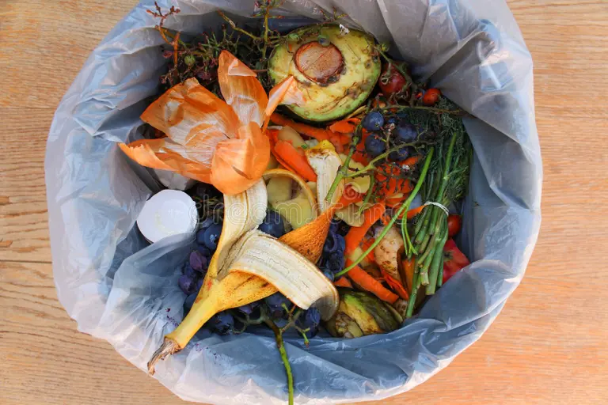
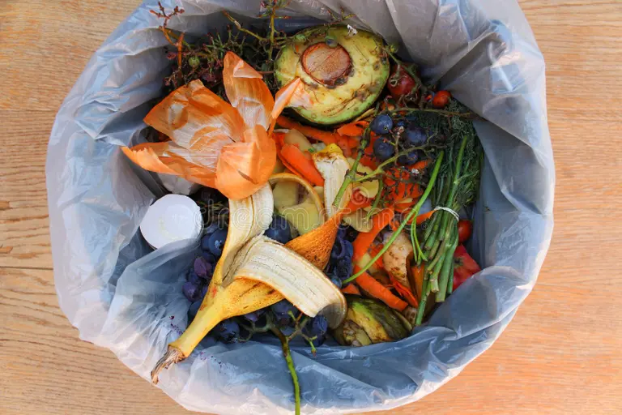
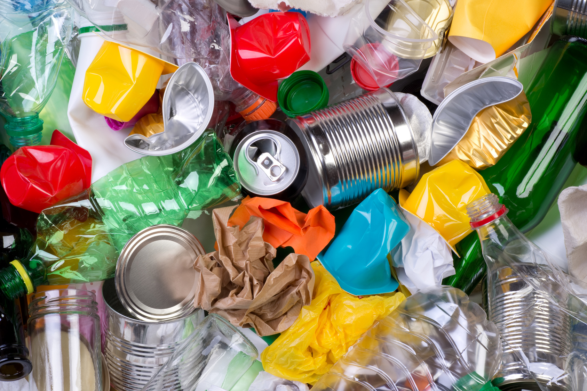
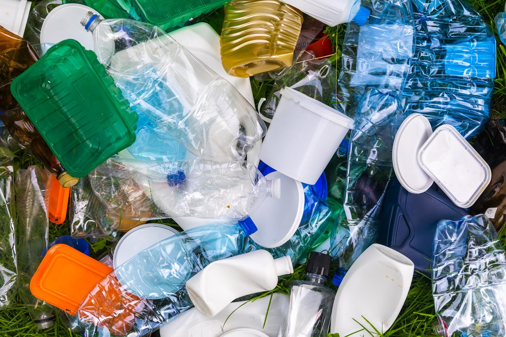
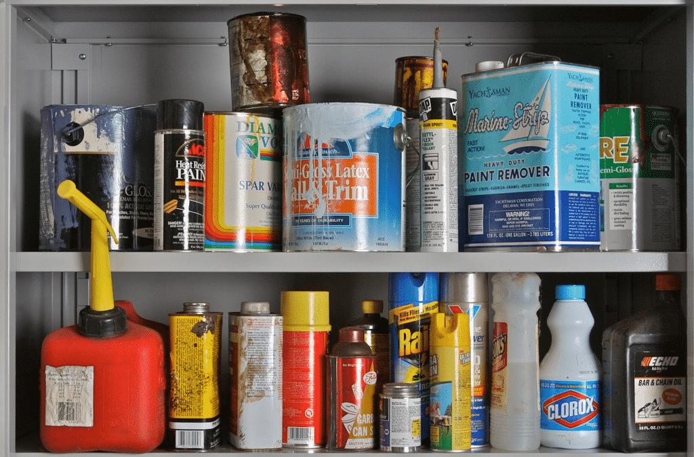
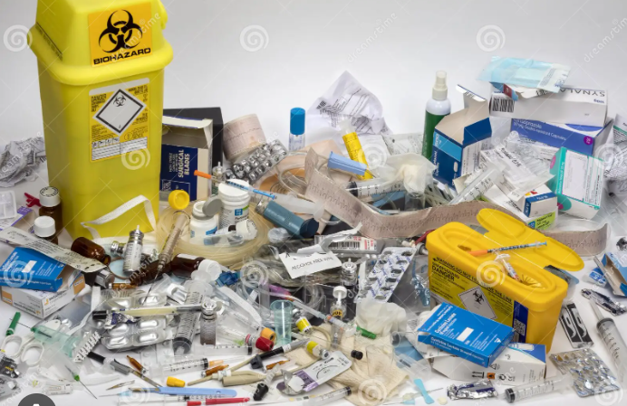
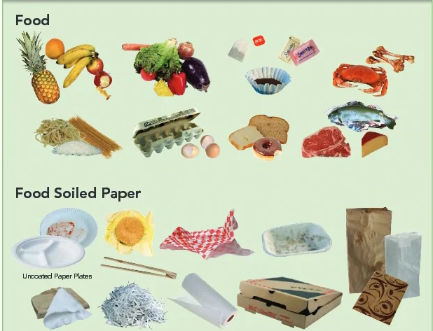
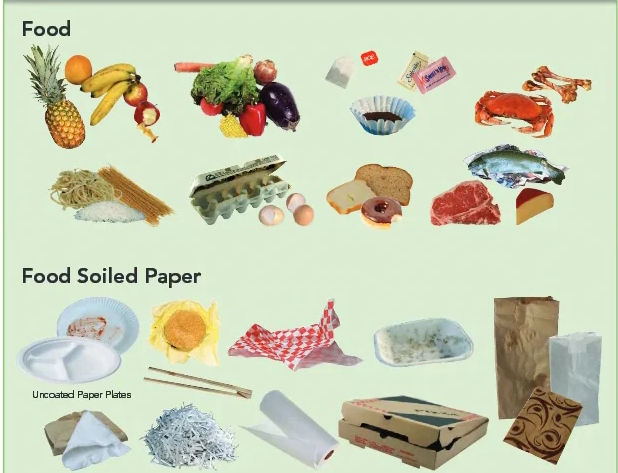

Our Services
We offer a variety of services to help you manage your waste effectively:
-
General Waste Disposal
We provide safe and efficient disposal of non-recyclable waste, making it easy for you to keep your environment clean.
 

Accepted Items: Household trash, non-recyclable plastics, etc.
Hours: Mon-Sun 8:00 AM - 8:00 PM
FAQs
Q: What items are considered general waste?
A: Items that cannot be recycled, such as certain plastics, household trash, etc.
Recycling Services
We help you dispose of recyclable materials in an environmentally friendly manner, contributing to a sustainable future.
 Accepted Items: Paper, cardboard, glass, certain plastics, etc.
Hours: Mon-Sun 8:00 AM - 8:00 PM
FAQs
Q: What materials can be recycled?
A: Paper, cardboard, glass, certain plastics, etc.
Hazardous Waste Management
We handle hazardous waste disposal, ensuring safe and compliant management of dangerous materials.
 Accepted Items: Chemicals, batteries, paints,Hospital Waste etc.
Hours: Mon-Fri 9:00 AM - 5:00 PM
FAQs
Q: How should hazardous waste be prepared for disposal?
A: Ensure items are securely sealed and labeled.
Composting Services
Our composting services help you convert organic waste into useful compost for gardening and landscaping.
 

Accepted Items: Food scraps, yard waste, etc.
Hours: Mon-Sun 8:00 AM - 6:00 PM
FAQs
Q: What items are suitable for composting?
A: Food scraps, yard waste, and other organic materials.
E Waste
We offer recycling services for electronic waste, including old computers, phones, and other electronics.


Accepted Items: Computers, phones, printers, TVs, etc.
Hours: Mon-Sun 9:00 AM - 5:00 PM
FAQs
Q: What electronics can be recycled?
A: Computers, phones, printers, TVs, etc.